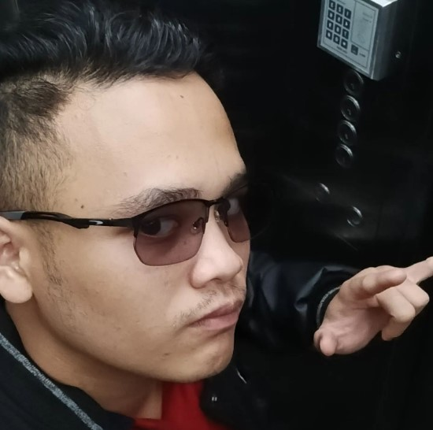

Introduction
Hi! My name is Hizkia, an aspiring software developer with a passion for technology and continuous learning. I aim to create innovative solutions and expand my skills in the tech industry.
My Journey
My background combines automotive mechanical engineering and software development. I graduated from SMK Negeri 3 Batam and worked for five years in manufacturing before shifting my focus to tech.
Skills and Strengths
- Quick Learning
- Leadership Experience
- Problem Solving
Hobbies and Interests
In my free time, I engage in activities that fuel my curiosity and help me relax.
Hobbies I Enjoy:
- Coding and Experimenting with New Tech
- Gaming (Strategy and Puzzle Games)
- Reading (Technology, Fiction, Non-fiction)
Top 3 Life Interests:
- Building Creative Software Projects
- Learning about Artificial Intelligence
- Exploring Human-Computer Interaction
My Vision
I envision technology as a tool for positive change. I aspire to create applications that enhance productivity and tackle real-world problems.